Molecule and Geometry Specification¶
Coordinates¶
Psi4 has a very flexible input parser that allows the user to provide
geometries as Cartesian coordinates, Z-matrix variables, or a combination of
both. The use of fixed values and variables are supported for both. For
example, the geometry for H2 can be specified a number of ways, using the
molecule optional_molecule_name {...} block.
molecule {
H
H 1 0.9
}
or
molecule {
H
H 1 r
r = 0.9
}
or
molecule {
H1
H2 H1 0.9
}
or
molecule {
H 0.0 0.0 0.0
H 0.0 0.0 0.9
}
or
molecule {
H 0.0 0.0 0.0
H 0.0 0.0 r
r = 0.9
}
or
molecule {
H 0.0 0.0 -r
H 0.0 0.0 r
r = 0.45
}
Blank lines are ignored and, unlike regular Python syntax, indentation within
the molecule block does not matter, although the molecule keyword itself must
be aligned within the input according to standard Python syntax. For more
examples of geometry specification, see the mints1 input file in the samples
folder. It is also possible to mix Cartesian and Z-matrix geometry
specifications, as demonstrated in the mints4 and
mints6 sample input files. For example, consider the following
geometry specification, taken from the mints6 input:
molecule alanine {
N -1.527107413251 0.745960643462 0.766603000356
C -0.075844098953 0.811790225041 0.711418672248
C 0.503195220163 -0.247849447550 -0.215671574613
O -0.351261319421 -0.748978309671 -1.089590304723
O 1.639498336738 -0.571249748886 -0.174705953194
H -1.207655674855 -0.365913941094 -0.918035522052
# First, remove the H from the alpha carbon. This line could be deleted
# and is only included for completeness
#H 0.429560656538 0.717651915252 1.673774709694
# Now patch it, using a Z Matrix specification. This patch can be applied
# anywhere in the coord specification, as long as it appears lower than
# the atoms referenced, as is usual for Z-Matrices
C 2 rCC 3 aCCC 1 dCCCN
H 7 rCH1 2 aHCC1 3 dHCCC1
H 7 rCH2 2 aHCC2 3 dHCCC2
H 7 rCH3 2 aHCC3 3 dHCCC3
H 0.221781602033 1.772570540211 0.286988509018
H -1.833601608592 0.108401996052 1.481873213172
H -1.925572581453 1.640882152784 0.986471814808
aCCC = 108.0
rCC = 1.4
dCCCN = 120
rCH1 = 1.08
rCH2 = 1.08
rCH3 = 1.08
aHCC1 = 109.0
aHCC2 = 109.0
aHCC3 = 109.0
dHCCC1 = 0.0
dHCCC2 = 120.0
dHCCC3 = 240.0
}
Here, we remove the hydrogen from the alpha carbon of glycine and replace it with a methyl group. Applying this patch using Cartesian coordinates is difficult, because it depends on the orientation of the existing glycine unit. In this example, we use Z-Matrix coordinates to define the methyl group, and define the orientation in terms of the existing glycine Cartesian coordinates which is much easier to visualize than the corresponding Cartesian-only approach.
Molecule Keywords¶
In addition to specifying the geometry, additional information can be
provided in the molecule block molecule optional_molecule_name {...}.
- Charge & Multiplicity
- If two integers
charge multiplicityare encountered on any line of the molecule block, they are interpreted as the molecular charge and multiplicity (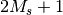), respectively. For multi-fragment complexes, each fragment can have acharge multiplicityline. - Units
- By default, Ångström units are used; this is changed by adding
a line that reads
units spec, wherespecis one ofang,angstrom,a.u.,au, orbohr. - Orientation
- Certain computations require that the molecule is not reoriented. This
can be achieved by adding either
no_reorientornoreorient. To prevent even recentering of the molecule, addno_comornocom. - PubChem
- A line reading
pubchem:molfetches the geometry for moleculemolfrom the PubChem database, wheremolis either the IUPAC molecule name or the CID number. See PubChem Database for details. - Symmetry
- The symmetry can be specified by a line reading
symmetry symbol, wheresymbolis the Schönflies symbol of the (Abelian) point group to use for the computation, one of one ofc1,c2,ci,cs,d2,c2h,c2v, ord2h. This need not be specified, as the molecular symmetry is automatically detected by Psi4. See Symmetry for details. - Fragments
- A line reading
--is interpreted as the separator between two non-covalently bound molecular fragments. See Non-Covalently Bonded Molecule Fragments for details.
Multiple Molecules¶
To facilitate more elaborate computations, it is possible to provide a name for each molecule and tell Psi4 which one should be used in a given calculation. For example, consider the following input file:
molecule h2 {
H
H 1 0.9
}
set basis cc-pvdz
set reference rhf
energy('scf') # on H2
clean()
molecule h {
H
}
set basis cc-pvdz
set reference uhf
energy('scf') # on H
Here, two separate jobs are performed on two different molecules; the first is performed on H2, while the second is for H atom. The last molecule to be specified is the “active” molecule by default. To explicitly activate a named molecule, the activate command is provided. With it, the above input file can be equivalently written as follows. Alternatively, the molecule can be specified directly to the computing function. Below, the third calculation is the same as the first.
molecule h2 {
H
H 1 0.9
}
molecule h {
H
}
activate(h2)
set basis cc-pvdz
set reference rhf
energy('scf') # on H2
clean()
activate(h)
set basis cc-pvdz
set reference uhf
energy('scf') # on H
# --------------------------------------
# equivalent to previous input ends here
clean()
set reference rhf
energy('scf', molecule=h2) # on H2
Job Control Keywords provides more details about the job control and calculation keywords used in the above examples.
Ghost Atoms¶
While many common computations, particularly SAPT and counterpoise corrections, can be greatly simplified using the notation described in Non-Covalently Bonded Molecule Fragments, manual specification of ghost atoms is sometimes required. Either
molecule he2 {
He
Gh(He) 1 2.0
}
or
molecule he2 {
He
@He 1 2.0
}
will generate a helium dimer with the second atom ghosted, i.e., possessing basis functions but no electrons or nuclear charge. See dfmp2_1 and ghosts for a demonstration of both mechanisms for specifying ghost atoms.
Isotopic Substitution¶
Caution
Use of isotopic substitution in Psi4 is not well developed, and the syntax is subject to change.
At present, isotopes can only be specified at creation-time of the molecule
The syntax for a deuterium- and tritium-substituted water is below. Note that asymmetric isotopic substitution such as this will change the molecule’s point group symmetry.
molecule dto {
units au
O 0.00000000 0.00000000 0.00000000
H@2.014101779 0.00000000 1.93042809 -1.10715266
H_label@3.01604927 0.00000000 -1.93042809 -1.10715266
}
The masses used by Psi4 can be found at psi4/include/masses.h. See freq-isotope for about the only use to which isotopologs can presently be put in Psi4.
PubChem Database¶
Obtaining rough starting guess geometries can be burdensome. The Z-matrix coordinate system was designed to provide chemists with an intuitive method for guessing structures in terms of bond lengths and angles. While Z-matrix input is intuitive for small molecules with few degrees of freedom, it quickly becomes laborious as the system size grows. To obtain a reasonable starting guess geometry, Psi4 can take a chemical name as input; this is then used to attempt to retrieve Cartesian coordinates from the [PubChem] database.
For example, to run a computation on benzene, we can use the following molecule specification:
molecule benzene {
pubchem:benzene
}
If the computer is connected to the internet, the above code will instruct Psi4 to search PubChem for a starting structure. The search is actually performed for compounds whose name contains “benzene”, so multiple entries will be returned. If the name provided (“benzene” in the above example) exactly matches one of the results, that entry will be used. If no exact match is found the results, along with a unique chemical identifier (CID), are printed to the output file, prompting the user to provide a more specific name. For example, if we know that we want to run a computation on a compound whose name(s) contain “benzene”, but we’re not sure of the exact IUPAC name, the following input can be used:
molecule benzene {
pubchem:benzene*
}
Appending the “*” prevents an exact match from being found and, at the time of writing, the following results are displayed in the output file:
Chemical ID IUPAC Name
241 benzene
7371 benzenesulfonic acid
91526 benzenesulfonate
244 phenylmethanol
727 1,2,3,4,5,6-hexachlorocyclohexane
240 benzaldehyde
65723 benzenesulfonohydrazide
74296 N-phenylbenzenesulfonamide
289 benzene-1,2-diol
243 benzoic acid
7370 benzenesulfonamide
636822 1,2,4-trimethoxy-5-[(E)-prop-1-enyl]benzene
7369 benzenesulfonyl chloride
12932 N-[2-di(propan-2-yloxy)phosphinothioylsulfanylethyl]benzenesulfonamide
7505 benzonitrile
78438 N-[anilino(phenyl)phosphoryl]aniline
12581 3-phenylpropanenitrile
517327 sodium benzenesulfonate
637563 1-methoxy-4-[(E)-prop-1-enyl]benzene
252325 [(E)-prop-1-enyl]benzene
Note that some of these results do not contain the string “benzene”; these compounds have synonyms containing that text. We can now replace the “benzene*” in the input file with one of the above compounds using either the IUPAC name or the CID provided in the list, viz:
molecule benzene {
pubchem:637563
}
or
molecule benzene {
pubchem:1-methoxy-4-[(E)-prop-1-enyl]benzene
}
Some of the structures in the database are quite loosely optimized and do not have the correct symmetry. Before starting the computation, Psi4 will check to see if the molecule is close to having each of the possible symmetries, and will adjust the structure accordingly so that the maximum symmetry is utilized.
The standard keywords, described in Molecule Keywords, can be used in conjuction to specify charge, multiplicity, symmetry to use, etc. .
Symmetry¶
For efficiency, Psi4 can utilize the largest Abelian subgroup of the full point group of the molecule. Concomitantly, a number of quantities, such as SOCC and DOCC, are arrays whose entries pertain to irreducible representations (irreps) of the molecular point group. Ordering of irreps follows the convention used in Cotton’s Chemical Applications of Group Theory, as detailed in Table Irreps. We refer to this convention as “Cotton Ordering” hereafter.
| Point Group | 1 | 2 | 3 | 4 | 5 | 6 | 7 | 8 |
|---|---|---|---|---|---|---|---|---|
| 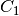 |  |
|||||||
| 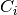 | 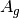 | 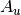 | ||||||
|
 |
|||||||
| 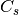 |  |
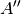 | ||||||
 |
|
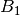 | 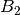 |  |
||||
| 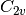 | 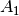 | 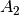 | ||||||
| 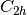 | 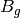 | 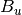 | ||||||
| 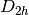 | 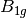 | 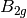 |  |
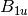 | 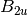 | 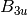 |
For example, water ( symmetry) has three doubly occupied orbitals, as well as one each of and symmetry; the corresponding DOCC array is therefore:
DOCC = [3, 0, 1, 1]
Although Psi4 will detect the symmetry automatically, and use the largest
possible Abelian subgroup, the user might want to run in a lower point group.
To do this the molecule keyword symmetry symbol can be used
(see Molecule Keywords). In most cases the standard
Schönflies symbol (one of c1, c2, ci, cs, d2,
c2h, c2v, d2h will suffice for symbol.
For certain computations, the user might want to specify which particular
subgroup is to be used by appending a unique axis specifier. For example when
running a computation on a molecule with symmetry in , the
axis can be chosen as either the , the 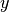, or the 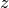; these can
be specified by requesing the symmetry as c2vx, c2vy, or c2vz, respectively.
Likewise the c2x, c2y, c2z, c2hx, c2hy, and c2hz
labels are valid. For symmetry the labels csx, csy, and
csz request the 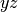, , and 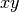 planes be used as the mirror plane,
respectively. If no unique axis is specified, Psi4 will choose an appropriate
subgroup.
Certain types of finite difference computations, such as numerical vibrational
frequencies, might lower the symmetry of the molecule. When this happens
symmetry-dependent arrays, such as SOCC, are automatically remapped
to the lower symmetry. For example, if we were to investigate the  state of water cation, we can specify
state of water cation, we can specify
SOCC = [0, 0, 1, 0]
in the input file. If any ensuing computations lower the symmetry, the above array will be appropriately remapped. For example, reducing the symmetry to (with the molecular plane defining the mirror plane), the above array will be automatically interpreted as:
SOCC = [0, 1]
Some caution is required, however. The  state can be obtained with
the
state can be obtained with
the
SOCC = [1, 0, 0, 0]
specification, which would become
SOCC = [1, 0]
under the above-mentioned reduction in symmetry. The 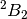 state, whose singly-occupied orbitals are
SOCC = [0, 0, 0, 1]
would be mapped to
SOCC = [1, 0]
which is the same occupation as the state. In this case, the
state is lower in energy, and is not problematic. The distorted
geometries for the state are excited states that are subject to
variational collapse. One way to obtain reliable energies for these states is
to use a multi-state method; in this case it’s easier to run the entire
computation in the lowest symmetry needed during the finite difference
procedure.
Non-Covalently Bonded Molecule Fragments¶
Psi4 has an extensive range of tools for treating non-covalent intermolecular forces, including counterpoise corrections and symmetry adapted perturbation theory methods. These require the definition of which fragments are interacting within the complex. Psi4 provides a very simple mechanism for doing so: simply define the complex’s geometry using the standard Cartesian, Z-matrix, or mixture thereof, specifications and then place two dashes between nonbonded fragements. For example, to study the interaction energy of ethane and ethyne molecules, we can use the following molecule block:
molecule eneyne {
0 1
C 0.000000 -0.667578 -2.124659
C 0.000000 0.667578 -2.124659
H 0.923621 -1.232253 -2.126185
H -0.923621 -1.232253 -2.126185
H -0.923621 1.232253 -2.126185
H 0.923621 1.232253 -2.126185
--
0 1
C 0.000000 0.000000 2.900503
C 0.000000 0.000000 1.693240
H 0.000000 0.000000 0.627352
H 0.000000 0.000000 3.963929
}
In this case, the charge and multiplicity of each interacting fragment is
explicitly specified. If the charge and multiplicity are specified for the
first fragment, it is assumed to be the same for all fragments. When
considering interacting fragments, the overall charge is simply the sum of all
fragment charges, and any unpaired electrons are assumed to be coupled to
yield the highest possible  value.
value.
Having defined a molecule containing fragments like eneyne above, it
is a simple matter to perform calculations on only a subset of the
fragments. For instance, the commands below run a scf first on the ethene
fragment alone (extract_subsets(1) pulls out fragment 1 as Real atoms
and discards remaining fragments) and next on the ethene fragment with the
ethyne fragment ghosted (extract_subsets(1,2) pulls out fragment 1 as
Real atoms and sets fragment 2 as Ghost atoms). For beyond bimolecular
complexes, arrays can be used, e.g. extract_subsets(2,[1,3]):
mA = eneyne.extract_subsets(1)
energy('scf')
clean()
mAcp = eneyne.extract_subsets(1,2)
energy('scf')
If the molecule contains fragments but is not conveniently ordered for the
-- marker, the auto_fragments() function can be applied, as shown in
pywrap-basis, to return as active molecule the previous
active molecule, only fragmented.
Advanced Python¶
A named molecule in an input file is a full-fledged instance of the
powerful C++ Molecule class. Thus, all member
functions (that have been exported via Boost Python) documented thereat
are accessible through the handle option_molecule_name in
molecule optional_molecule_name {...}.
The molecular geometry can be got and set and manipulated as a psi4.Matrix object. Below shows how to access coordinates in an input file in Python.
molecule formaldehyde { C 0.0 0.0 0.0 O 0.0 1.2 0.0 H -0.8 -0.3 0.0 H 0.8 -0.3 0.0 # set geometry in angstroms } formaldehyde.update_geometry() # update the molecule internals since pre-energy()-like call formaldehyde.print_out() # print molecule to output file geom1psi = formaldehyde.geometry() # get coordinates in bohr as a psi4.Matrix geom1psi.print_out() # print coordinates array to output file geom1py = mat2arr(geom1psi) # get coordinates as a Python array print geom1py # print coordinates to screen geom2py = [[ 0.0, 0.0, 0.0], [ 0.0, 1.5, 0.0], [-0.8, -0.3, 0.0], [ 0.8, -0.3, 0.0]] # define alternate coordinates in angstroms as Python array geom2psi = psi4.Matrix(4, 3) # initialize psi4.Matrix geom2psi.set(geom2py) # load Python array into psi4.Matrix geom2psi.scale(1.0/psi_bohr2angstroms) # scale into bohr geom2psi.print_out() # print alternate coord array to output file formaldehyde.set_geometry(geom2psi) # load alternate coordinates into molecule formaldehyde.update_geometry() # update the molecule internals formaldehyde.print_out() # print new molecule to output file compare_values(28.9950517332, formaldehyde.nuclear_repulsion_energy(), 4, "geom2 took")Molecules can be initited from XYZ files and fragmented for SAPT computations.
# >>> cat mol1.xyz #7 # #O 0.00000000 -0.05786571 -1.47979303 #N 0.00000000 0.01436394 1.46454628 #H 0.00000000 0.82293384 -1.85541474 #H 0.81348351 0.39876776 1.92934049 #H 0.00000000 0.07949567 -0.51934253 #H 0.00000000 -0.98104857 1.65344779 #H -0.81348351 0.39876776 1.92934049 # >>> cat mol2.xyz # 6 au # stuff # C 0.00000000000000 0.00000000000000 5.26601138679877 # C 0.00000000000000 0.00000000000000 -3.15195886530135 # H 0.00000000000000 0.00000000000000 7.28558683837122 # H 0.00000000000000 0.00000000000000 -1.12178201232889 # N 0.00000000000000 0.00000000000000 3.08339310458383 # N 0.00000000000000 0.00000000000000 -5.33865984413460 sapt = {'mol1': -0.0105313323529, 'mol2': -0.00839486625709} nre = {'mol1': 38.8138764635, 'mol2': 72.3451968428} set basis jun-cc-pvdz for mol in ['mol1', 'mol2']: filen = mol + '.xyz' p4mol = Molecule.init_with_xyz(filen) # create molecule from file above fragmentedmol = auto_fragments(molecule=p4mol) # fragment with BFS algorithm activate(fragmentedmol) # activate returned molecule (for sapt) e = energy('sapt0') # run SAPT that requires 2 fragments compare_values(sapt[mol], e, 5, '%s sapt ok' % mol) compare_values(nre[mol], p4mol.nuclear_repulsion_energy(), 4, '%s ok' % mol) clean() # clean scratch between loop calcsThe essential element, mass and coordinate information of the molecule is accessible
molecule eneyne { 0 1 C_ene 0.000000 -0.667578 -2.124659 C_ene 0.000000 0.667578 -2.124659 H_ene@2.014 0.923621 -1.232253 -2.126185 H_ene -0.923621 -1.232253 -2.126185 H_ene -0.923621 1.232253 -2.126185 Gh(H_ene) 0.923621 1.232253 -2.126185 -- 0 1 X 9.0 9.0 9.0 C_yne 0.000000 0.000000 2.900503 C_yne 0.000000 0.000000 1.693240 H_yne 0.000000 0.000000 0.627352 H_yne 0.000000 0.000000 3.963929 } eneyne.update_geometry() for iat in range(eneyne.natom()): print """{:4} {:4} {:12} {:8.4f} {:12.6f} {:12.6f} {:12.6f} {:12.6f}""".format( eneyne.Z(iat), # atomic number eneyne.symbol(iat), # element symbol eneyne.label(iat), # input element label eneyne.charge(iat), # element charge eneyne.x(iat), # x-coordinate eneyne.y(iat), # y-coordinate eneyne.z(iat), # z-coordinate eneyne.mass(iat), # mass ) # 6.0 C C_ENE 6.0000 -0.031900 -1.218981 -3.948079 12.000000 # 6.0 C C_ENE 6.0000 -0.031900 1.304098 -3.948079 12.000000 # 1.0 H H_ENE 1.0000 1.713491 -2.286062 -3.950962 2.014000 # 1.0 H H_ENE 1.0000 -1.777290 -2.286062 -3.950962 1.007825 # 1.0 H H_ENE 1.0000 -1.777290 2.371180 -3.950962 1.007825 # 0.0 H H_ENE 0.0000 1.713491 2.371180 -3.950962 1.007825 # 6.0 C C_YNE 6.0000 -0.031900 0.042559 5.548101 12.000000 # 6.0 C C_YNE 6.0000 -0.031900 0.042559 3.266705 12.000000 # 1.0 H H_YNE 1.0000 -0.031900 0.042559 1.252468 1.007825 # 1.0 H H_YNE 1.0000 -0.031900 0.042559 7.557685 1.007825